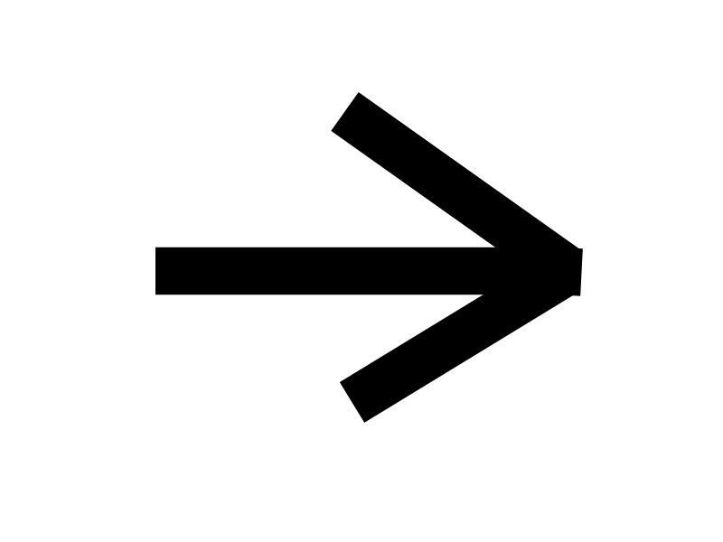

HOW-TO: Программа на
|
Из множества существующих языков программирования Python — один из самых лёгких
в изучении. Он создан в конце 80-х годов XX века, но с тех пор он сильно изменился.
Хотя Python входит в состав большинства дистрибутивов Linux, на него часто не
обращают внимания при выборе языка для изучения. В этой статье мы рассмотрим
создание консольных приложений, а в следующей — программирование графических
интерфейсов (GUI). Давайте создадим простую программу прямо сейчас.
Наберём код в текстовом редакторе (например, в gedit). Потом мы разберёмся, что делает
каждая строка и пойдём дальше.
Введите эти 4 строки:
#!/usr/bin/env python
print 'Hello. I am a python program.'
name = raw_input ("What is your name?")
print "Hello there, " + name + "!"
Это всё. Сохраните файл как hello.py в любом месте. Я предлагаю сохранить его в папке
python_examples в домашнем каталоге. Этот пример показывает, как просто написать
программу на Python. Для запуска программы нужно сделать её файл исполняемым. Для
этого введите в терминале
chmod +x hello.py
в папке, в которой вы сохранили программу. Теперь запустите её.
greg@earth:~/python_examples$ ./hello.py
Hello. I am a python program.
What is your name? Ferd Burphel
Hello there, Ferd Burphel!
greg@earth:~/python_examples$
Вот и всё.
Теперь давайте рассмотрим пример программирования цикла. Запустите текстовый
редактор и наберите следующую программу:
#!/usr/bin/env python
for cntr in range(0,10):
print cntr
Не забудьте поставить символ табуляции перед строкой «print cntr». Это важно. В
Python для указания на блоки кода используются не круглые «(» и фигурные «{» скобки
как в других языках программирования, а отступы.
 |
 |